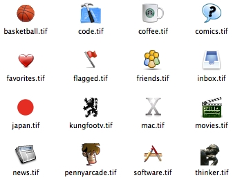

Tue, 2006-03-14
Default

A set of default icons for the endo groups bar. Most of these are included in the default subscriptions offered by endo's startup assistant.
Download default.zip.
To use an icon, launch endo and open the Subscriptions Manager (use the cmd-2 shortcut). Select a group, then drag and drop an icon file on the group's icon well.
Technorati Tags: aggregator, endo, icons